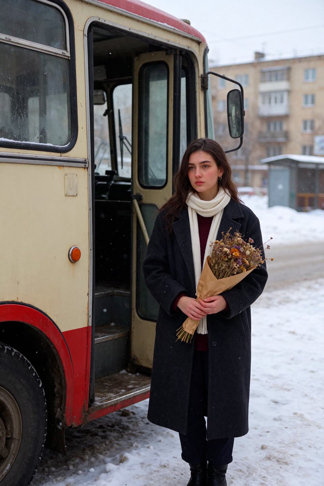

Seedream 5.5: early-1990s Soviet winter fashion editorial, charcoal wool coat and ivory scarf beside an old cream-and-red city bus, on-camera flash

A winter fashion editorial from Seedream 5.5 that mixes 1990s candid street photography with luxury styling: an adult woman in an oversized charcoal wool coat, ivory knitted scarf, burgundy ribbed sweater and black leather boots holds dried wildflowers in kraft paper beside the open folding doors of an old Soviet city bus, in snow and cold overcast light with direct on-camera flash. The prompt is a model of wardrobe writing: every garment gets a colour and material, one warm accent (the flowers) is placed against a muted palette, and the texture brief ("Real skin texture, tactile wool, believable hands and bouquet construction") targets common AI failures. The trailing Midjourney-style flags (--ar 3:4 --style raw --s 150 --no …) are part of the creator's text; how Seedream treats them is not stated. Two outputs were posted; the first is used here.
Prompt
Photorealistic fashion editorial with the atmosphere of a winter morning in the early 1990s, in a Soviet-era residential neighborhood. A beautiful adult brunette woman with delicate facial features stands beside the open folding doors of an aged cream-and-red Soviet LiAZ-677 city bus. She holds a small bouquet of dried wildflowers wrapped in vintage brown kraft paper, gently gripping it with both hands in front of her thighs. She wears an oversized charcoal wool coat, a soft ivory knitted scarf, a dark burgundy ribbed sweater, straight dark trousers and black leather winter boots. Loose dark brown hair falls naturally around her face, a few strands lifted by the freezing wind. Flushed cheeks, minimal makeup, thoughtful expression, looking slightly past the camera, shoulders gently raised against the cold. Snow-covered pavement, compacted gray snow beside the bus wheels, frosted windows with condensation, faded red paint, weathered metal. Blurred Soviet apartment blocks and a modest bus shelter in the distance. Fine snowflakes in the air, visible breath. The delicate dried flowers add a subtle warm color accent against the muted winter surroundings. Three-quarter portrait framed from the knees up, eye-level camera, woman placed off-center, the bus filling one side of the composition. Cold overcast daylight with direct on-camera flash, crisp face, deep background, subtle analog film grain, restrained colors, candid 1990s street photography combined with luxury fashion editorial. Real skin texture, tactile wool, believable hands and bouquet construction, shot on a 50mm lens --ar 3:4 --style raw --s 150 --no modern cars smartphones logos text watermark
Our Seedance 2.5 adaptation
[ADAPTED for Seedance 2.5 by Grok Bot; not the creator's prompt. Follows the official BytePlus Seedance 2.5 prompt guide and its official sd25-pe prompt-optimizer skill: parameters only on the API line (not in the prompt body), subject + action + scene, then visuals, camera (move, subject, start, direction, arrival) and sound; only the source's own exclusions are kept.] API: duration 8, ratio adaptive, resolution 1080p, generate_audio true; first_frame = the Seedream 5.5 editorial still. 【Subject】The woman exactly as in the first frame: oversized charcoal wool coat, ivory knitted scarf, burgundy ribbed sweater, dark trousers, black leather boots, a small bouquet of dried wildflowers in brown kraft paper held in both hands; the old cream-and-red city bus with its folding doors open beside her. 【Action】Fine snow drifts down; her breath shows in the cold; a few strands of hair lift in the wind. At about 5 s she glances from just past the camera into the lens, then back. The bus doors stay open and the bus does not move. 【Camera】Locked at eye level, knee-up framing kept as in the first frame; a very slow push in. 【Visuals】Cold overcast daylight with a direct on-camera flash look, crisp face, deep background, subtle analog film grain, restrained colours; real skin texture, tactile wool. No modern cars, smartphones, logos, text or watermark. 【Sound】Wind, a bus engine idling, muffled street noise, snow underfoot.
Tags: Seedream 5.5, fashion editorial, winter wardrobe, wool coat, knitted scarf, 1990s Eastern Bloc, on-camera flash, analog grain, single warm accent, 3:4 portrait